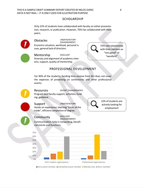

As part of the two‐member GPSC Survey Committee,1 I collaborated and worked on development of the survey design, questionnaires, and analysis plan. Data collection and analysis is outsourced to the external organization (ARC), due to administration requirements. However, ARC completely acts upon instructions from us including detailed requirements of the analysis.
The questionnaire was designed to address dual status of graduate students: as students and as employees. Initial heuristic design has been supplemented with two pilots and series of interactions with GPSC representatives and students to identify and incorporate specific characteristics of different programs and students in them.
Process was guided by the idea that survey should:
Although final questionnaire had close to eighty questions, they were very easy to complete in a timely manner—which was confirmed during data gathering—and were structured around following areas:
The project will generate several reports, from the most general aimed at broader university community, to very specific ones that should inform individual decisions of stakeholders (e.g. programs, colleges, student organizations, etc.)
“Brochure” is especially interesting one, since it includes aggregated data along all main categories of analysis, presented in an easy to navigate three-level grading system—unsatisfactory, decent, excellent—with a special note of “disagreement” in cases where variance of the responses is significantly large. Individual level questions are aggregated to more general categories and “graded” (e.g. courses or faculty). These categories form broader areas from the structure, which are also graded in the same way (e.g. academics). Besides these general characterizations, brochure also includes specific information and answers to particularly relevant questions for the area.
Snapshots of the brochure. Data is fictive, since it is still in the process of analysis.

The other member was Clay Michael Awsumb, Vice-president for Student Affairs, newly elected president of GPSC.↩